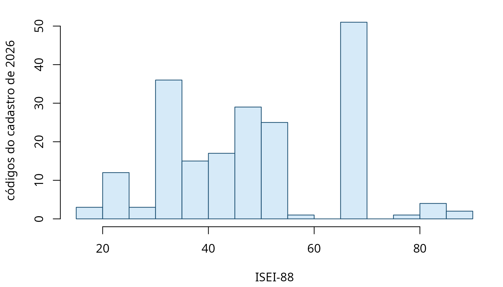

A versão 0.3.0 incorporou o cadastro de ocupações da eleição de 2026. Nada nesta página lê microdado: tudo sai das tabelas que acompanham o pacote.
r <- tse_ocupacao_rotulos
cods_2026 <- unique(r$cod_tse[r$ate == 2026])
length(cods_2026)
#> [1] 210São 210 códigos vigentes.
O TSE não criou código nenhum
O resultado que mais importa para quem já usava o pacote é negativo:
d <- tse_diff_cadastro(2024, 2026)
table(d$mudanca)
#>
#> extinto
#> 46Nenhum código criado. O dicionário de tradução, que é a única ponte autoral do pacote, não precisou de uma linha nova para cobrir a eleição em curso, e a cobertura é total:
checa_cobertura(cods_2026)
#> cobertura ok: 210 códigos observados, todos no dicionário.Os 46 códigos que aparecem como extintos merecem cuidado, porque o nome engana. Eles não foram revogados: 2024 foi uma eleição municipal e 2026 é geral, e há ocupações que simplesmente não foram declaradas por ninguém desta vez. Ausência de declaração não é revogação de código. Trocar de par de comparação não resolve — comparar duas eleições gerais devolve 48 extintos, e não menos.
O que a régua alcança
isei_2026 <- suppressWarnings(tse_para_isei(cods_2026))
sum(!is.na(isei_2026))
#> [1] 198
summary(isei_2026)
#> Min. 1st Qu. Median Mean 3rd Qu. Max. NAs
#> 16.0 34.0 50.0 49.6 68.0 90.0 12198 dos 210 códigos recebem um ISEI. Os doze restantes são os que não nomeiam ocupação: a categoria residual, os vínculos públicos sem função, quem está fora da população economicamente ativa.

A distribuição é ampla e bimodal, e isso é uma propriedade do cadastro, não do eleitorado: cada código conta uma vez, independentemente de quantas pessoas o declararam. O cadastro do TSE detalha muito o topo, com dezenas de profissões de nível superior nomeadas uma a uma, e agrega grosseiramente a base.
Onde o esquema de classes responde e o ISEI não
cl <- tse_para_classe(cods_2026, ano = rep(2026L, length(cods_2026)))
sort(table(as.character(cl)), decreasing = TRUE)
#>
#> Profissionais de nível superior Classe média técnica e administrativa
#> 54 53
#> Operários e trabalhadores manuais Trabalhadores de serviços e comércio
#> 39 30
#> Dirigentes e políticos Militares e segurança pública
#> 9 5
#> Proprietários e empregadores Inativo com trajetória
#> 5 4
#> Trabalhadores rurais Vínculo público não especificado
#> 4 4
#> Fora da PEA por posição Não informado
#> 2 1As quatro categorias que o ISEI deixa em branco reaparecem aqui nomeadas: quem tem vínculo público não especificado, quem está fora da população economicamente ativa por posição, quem é inativo com trajetória, e o não informado. É a mesma lição da tabela em Comece aqui, agora sobre o cadastro inteiro.
O que não se pode medir ainda
A safra de 2026 é aberta. O prazo de registro se encerrou, mas os pedidos ainda estão sendo julgados, e não há resultado. Três consequências práticas:
O patrimônio declarado não entra. A coluna de patrimônio de
tse_validacao está deflacionada a reais de outubro de 2024,
e outubro de 2026 não aconteceu. Em vez de inventar um deflator, o
pacote se abstém:
O acréscimo de 2026 aparece no n e não aparece no
n_com_bens. Nenhuma mediana de patrimônio do conjunto de
validação foi tocada pela safra nova.
Não há eleitos. Toda análise de sucesso eleitoral por ocupação continua parando em 2024.
E não há painel por pessoa. O carregamento retrospectivo de
isei_retrospectivo() depende de reencontrar a mesma pessoa
em registros anteriores, o que exige a apuração fechada. Os números de
recuperação documentados na função seguem medidos sobre 1998–2024.